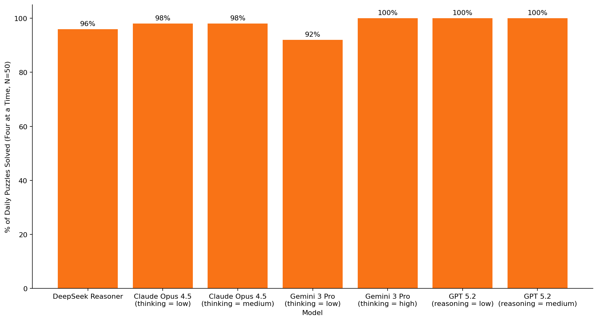
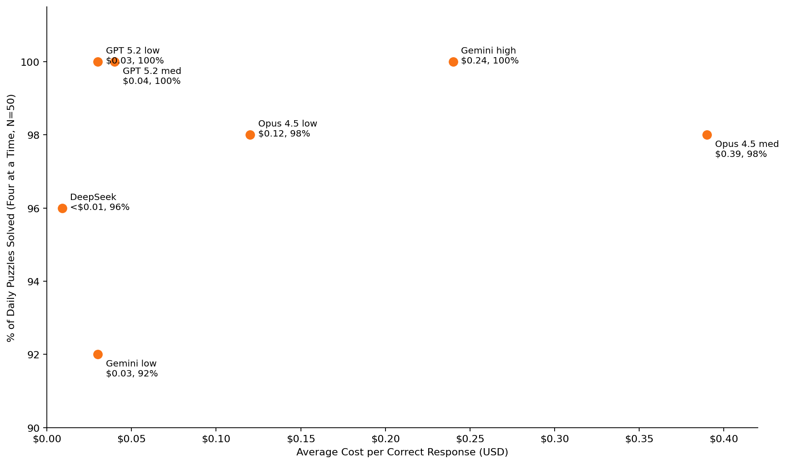
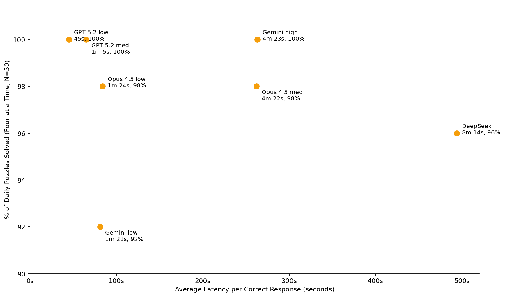

Running a Custom Benchmark: AI vs. The New York Times' Connections (2026 Update)
View ResultsIntroduction
When AI ’thinking’ models were first introduced in late 2024–early 2025, I became curious how these models would perform on The New York Times word game Connections. To find out, I built an application to programmatically evaluate—via model APIs—how different LLMs perform on the puzzle. The results from that experiment last year can be found here (OpenAI models) and here (expanded to include models from other providers like Google, Anthropic, and others).
About a year later, we have probably become used to LLMs solving complex math and logic problems, but this was new and non-obvious at the time. In last year’s experiment, OpenAI’s then-strongest model (o1) solved the puzzle 100% of the time (N = 30), but Google’s strongest model (Gemini 2.5 Pro) only managed 83% and Anthropic’s strongest performer (Claude 3.7 Sonnet) only 57%.
Partly out of curiosity—I still play Connections every day, and often find myself wondering how an AI model would handle a particularly tricky puzzle—I decided to restart the experiment in 2026.
The setup for this year’s experiment was essentially the same as last year’s. I updated the application through which the experiment is run, mainly to account for changes in model APIs. I also added a new dimension to the experiment: although Connections rules don’t require players to name a theme when they make a guess, the models in the experiment were asked to provide one. Through an ‘LLM-as-judge’ workflow, I evaluated models on the correctness of the themes they provided.
I tested models from OpenAI, Anthropic, Google, DeepSeek, Mistral, and Cohere on a sample of 50 daily Connections puzzles, starting January 1, 2026. The full results, including the exact models tested and their reasoning/thinking settings, can be found here.
Results: Discussion

Connections rules (N = 50)" />The best models from OpenAI, Anthropic, Google, and DeepSeek performed very well on Connections. Under standard Connections rules (‘Four at a Time’ mode), these models scored at least 92% (N = 50). GPT 5.2 (at reasoning levels ‘low’ and ‘medium’) scored 100%, as did Gemini 3 Pro (at thinking level ‘high’). Although not shown in the chart above, Google’s Gemini 3 Flash (at thinking = ‘high’) also scored 100%. Anthropic’s Claude Opus 4.5 scored 98% at ‘low’ and ‘medium’ thinking levels; in a sample of 50 puzzles, this means the model failed to solve just one puzzle (at each thinking setting). DeepSeek Reasoner scored 96%.
Although the sample evaluated is still relatively small, the results suggest that the top models, especially GPT 5.2 and both versions of Gemini 3, are effectively near-certain to solve Connections.
Given convergence in model performance on the main benchmark measure (puzzle solve rate), efficiency factors (like cost and latency) and secondary performance measures (like solving the puzzle with fewer mistakes) become more significant differentiators between models.
The charts below are scatterplots of model performance versus (1) cost and (2) latency.


GPT 5.2 is the standout performer on these measures. In addition to its 100% puzzle solve rate, it is also the cheapest and fastest model (among the top performers), delivering correct responses at an average cost of $0.03–$0.04 (at reasoning efforts ‘low’ and ‘medium’, respectively) and an average latency of 45–65 seconds. Claude Opus 4.5 (medium) was the outlier in terms of cost ($0.39 average, with several responses costing $0.70+), while DeepSeek Reasoner was the outlier in terms of latency (a painful average of 8 minutes for a correct response, with many runs going for more than 15 minutes). On the other hand, Reasoner was also undeniably the cheapest model, consistently delivering correct responses for less than $0.01.
| Model | Theme Error Rate | P(0 mistakes) | P(≤1 mistakes) |
|---|---|---|---|
| DeepSeek Reasoner | 11% | 50% | 79% |
| Claude Opus 4.5 (low) | 9% | 63% | 92% |
| Claude Opus 4.5 (medium) | 5% | 82% | 96% |
| Gemini 3 Pro (low) | 9% | 41% | 76% |
| Gemini 3 Pro (high) | 2% | 96% | 98% |
| GPT 5.2 (low) | 14% | 58% | 90% |
| GPT 5.2 (medium) | 12% | 68% | 96% |
I also tracked two secondary performance measures. First, as highlighted above, models in this year’s experiment were evaluated on theme correctness. Occasionally, models would find a correct grouping of terms, but name an obviously incorrect theme connecting those terms. For example, on the February 17 puzzle, for the terms ‘BOMBAY’, ‘BUSTLE’, ‘FLOPPY’, and ‘MISSUS’, GPT 5.2 (medium) named the theme ‘Words that end with a silent letter’, which is obviously incorrect (correct theme: ‘STARTING WITH SYNONYMS FOR “DUD”’).
I thought this metric would be a useful proxy for how accurately models were identifying relationships between terms; a high theme error rate would suggest that the models were either frequently making lucky guesses, or seeing unintended (and perhaps unexpected) relationships between terms.
Some models, like GPT 5.2 and DeepSeek reasoner, did in fact turn out to have higher theme error rates than others—but in all probability as a byproduct of the Connections interaction format rather than due to genuine confusion. In The New York Times game, players aren’t required to name themes at all, and once three groups are solved, the remaining four terms are effectively forced. In a similar way, it seems that many models in the experiment treat theme naming on the final solved group as low-value overhead, and focus on simply submitting the remaining terms, which accounts for their high theme error rates.
The data strongly supports this interpretation. GPT 5.2 (low) had a theme error rate of 14%, but 25 of the 27 incorrect themes it named were on the final solved group. GPT 5.2 (medium) (22/23) and DeepSeek Reasoner (18/22) showed similar patterns. Further supporting this interpretation, these same models had far lower theme error rates in Single Pass mode: for example, only 1% for GPT 5.2 (medium) (vs. 12% in Four at a Time). (For the puzzle mentioned above, in Single Pass mode GPT 5.2 (medium) correctly identified the theme as ‘Start with a synonym for failure’).
This caveat notwithstanding, Gemini 3 Pro (high) was the standout performer on theme correctness, naming an incorrect theme only 2% of the time (4 times out of 200). Notably, it did not exhibit the same “final-group sloppiness” seen in other models: its theme labels remained accurate even on the last solved group.
Models were also evaluated on P(0 mistakes) and P(≤1 mistakes), i.e. the percentage of puzzles a model solved (1) without making a mistake and (2) with one or fewer mistakes. Once again, Gemini 3 Pro (high) was the standout performer, solving 96% of puzzles without a single mistake. Performance converged across models for P(≤1 mistakes), with many scoring 90%+. It’s worth noting that GPT 5.2 and Opus 4.5 may have achieved similar results to Gemini 3 Pro at higher reasoning/thinking levels; they were only tested at ‘low’ and ‘medium’ settings.
Finally, two other models were evaluated in the experiment: Magistral Medium 1.2 (from French company Mistral) and Command A Reasoning (from Canadian company Cohere). Mistral’s model was disappointing. Billed as its “frontier-class multimodal reasoning model”, it solved Connections just 4% of the time. It’s unclear why it performs so badly on the puzzle; Mistral cites strong performance from the model on public math benchmarks like AIME. The speed of its responses suggests that the model wasn’t undertaking extended reasoning at all, and unlike models from other vendors there was no ‘thinking budget’ to configure to ensure that it did so. Command A, Cohere’s frontier reasoning model, performed better than Magistral, solving the puzzle 38% of the time, but was still far from the best performers discussed above.
Reflections
I still find it pretty impressive that these models can solve Connections, and consistently identify even the most subtle relationships between terms. To give just a few examples, I think it's incredible that Gemini 3 Pro identified that ‘LESSON’, ‘RESEED’, ‘SYNC’, and ‘WAYNE’ are ‘Homophones of words meaning “decrease”’ or that ‘ELLEN’, ‘SPINY’, ‘TIMER’, and ‘USE’ are ‘Magazines plus one letter’.
Leaving aside why and how the models can do this—Connections is a public, recurring, and heavily discussed puzzle, and the models likely benefit not just from broad lexical and semantic knowledge acquired from vast English language training data, but also from having learned the puzzle’s format, patterns, and style—I still think it’s remarkable that a technology that can do this exists.
Compared with last year, it’s clear that the models have gotten better at the puzzle. While only OpenAI’s o1 scored 100% on a sample of 30 puzzles last year, several models did so this year, and at a fraction of the cost. Just two years ago, none of this was even possible.
As AI vendors and models proliferate, I think benchmarking is going to become an increasingly important feature of AI implementation. This is especially true when headline benchmark measures saturate, in which case efficiency measures (such as cost and latency) and secondary performance measures (such as, in this experiment, the probability of solving with ≤1 mistakes) will be more significant differentiators between models.